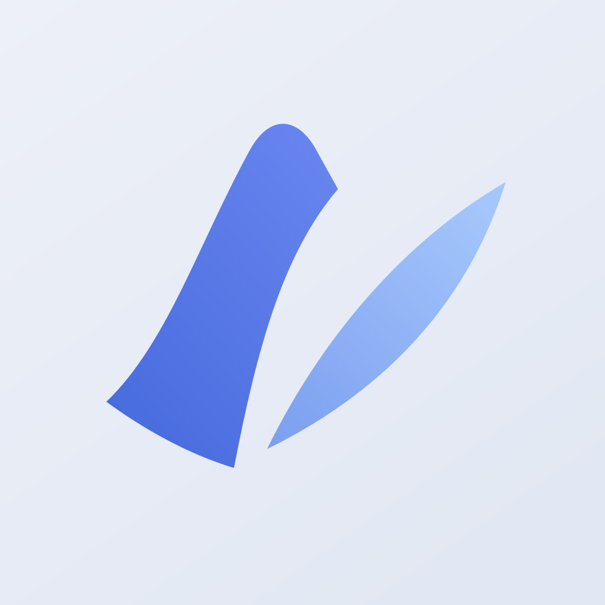
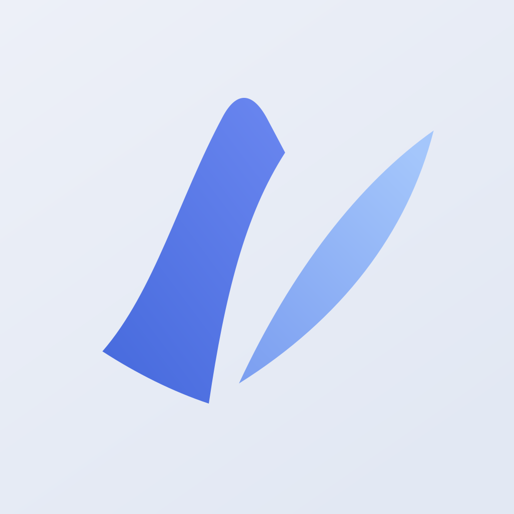
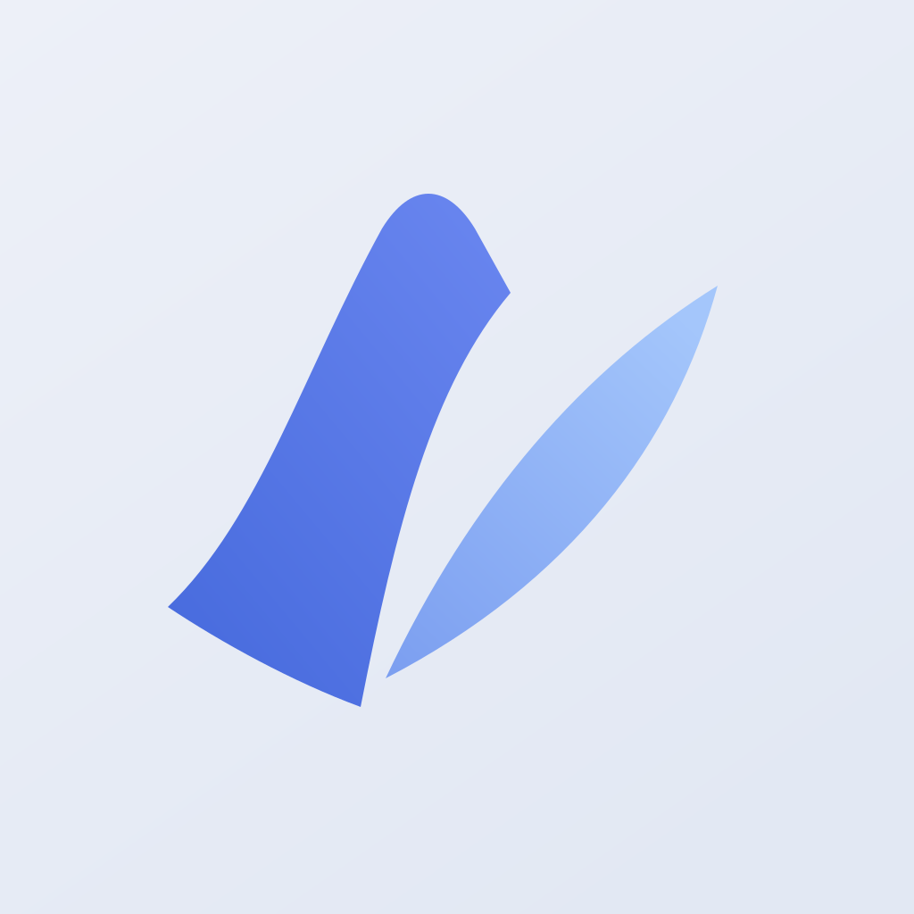
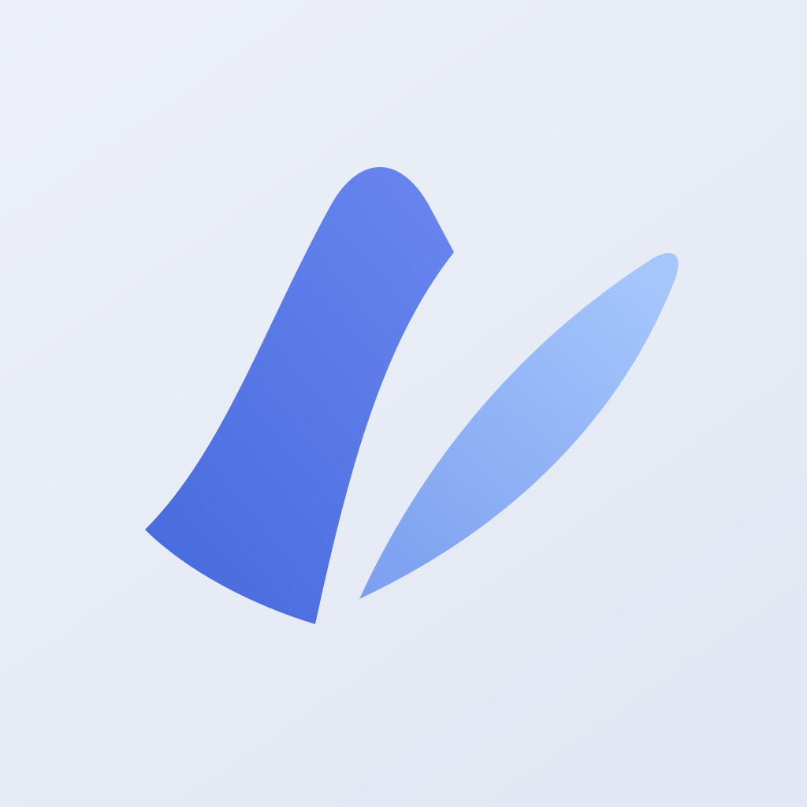
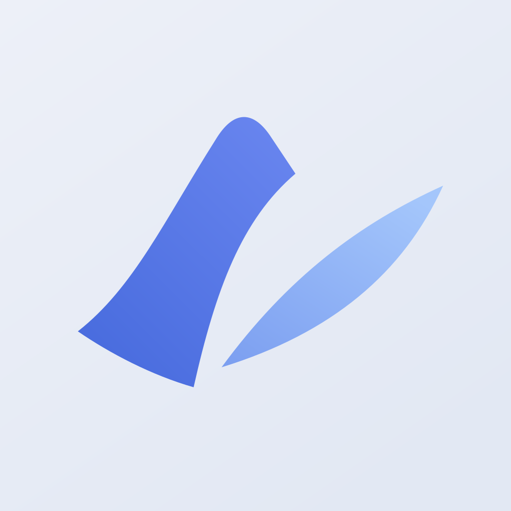
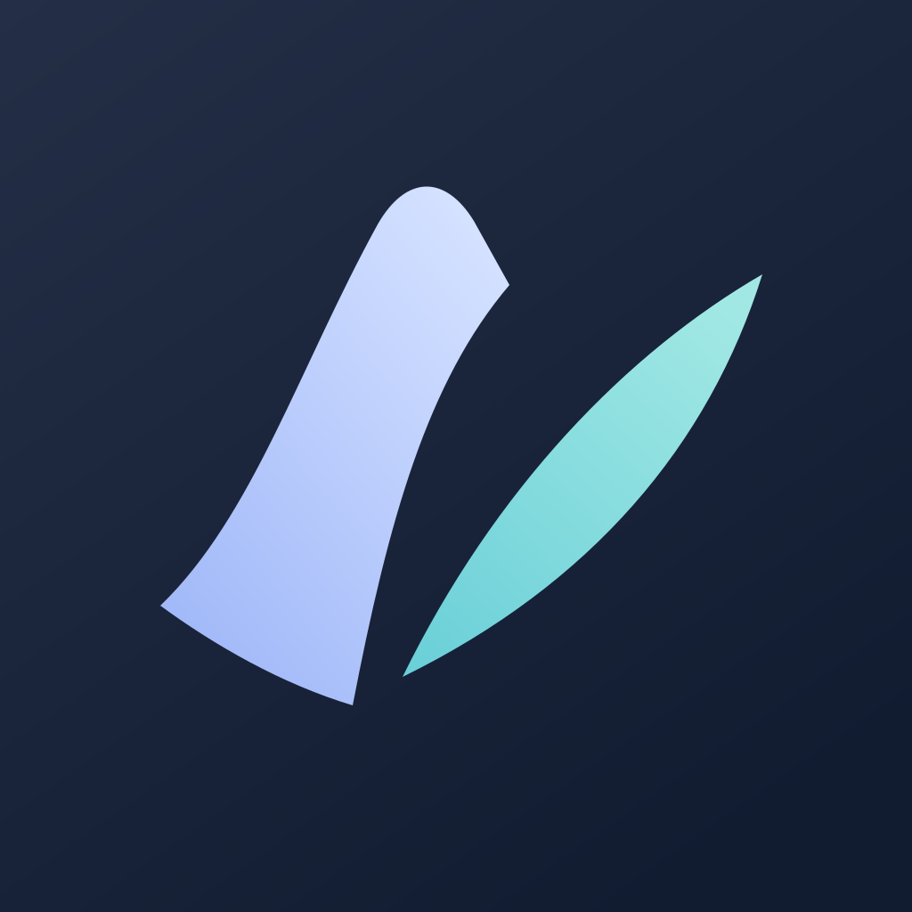

保留原版性格，收住右侧尖端，微调两片的重量。
保留双片上扬的轮廓。A—E 比较形状，F 比较配色。

保留原版性格，收住右侧尖端，微调两片的重量。

主片略窄、尖端略高，整体更轻。

缩小两片间的距离，让小尺寸下的整体感更强。

放圆右片尖端，主片过渡更舒展。

主片更倾斜，右片向外舒展，方向感更明显。

 32 / 18 / 16 px
32 / 18 / 16 px与 A 使用同一轮廓，只比较深底和蓝青配色。